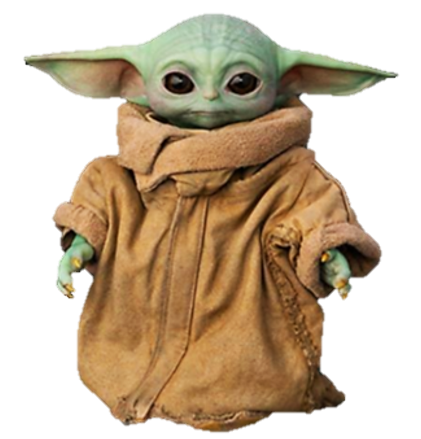
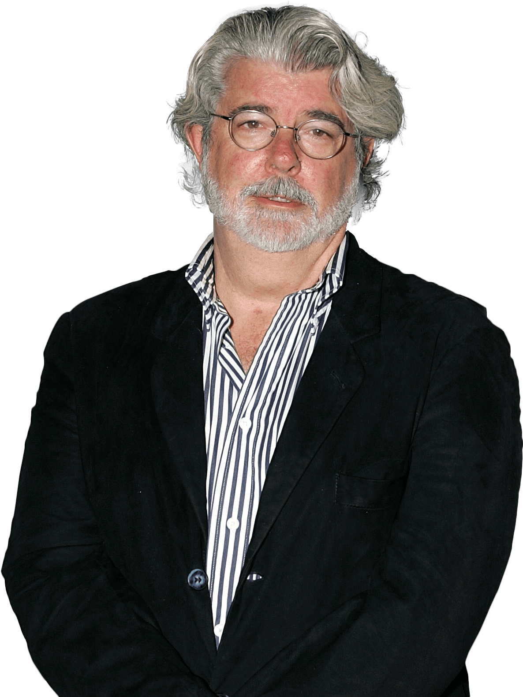

STAR WARS
Curiosidades
Segundo o American Film Institute a expressão "Que a força esteja com você" é a 8ª mais famosa da história do cinema.


George Lucas foi diagnosticado com hipertensão e princípio de infarto logo após o término nas gravações do primeiro filme da saga, por isso voltou a dirigir somente na segunda trilogia.
Os seis filmes receberam 25 nomeações ao Oscar . Só “Uma Nova Esperança” venceu seis.


Foram necessários três atores para dar vida ao vilão nas trilogia original: David Prowse (corpo), Sebastian Shaw (rosto) e James Earl Jones (voz).
Carregando...